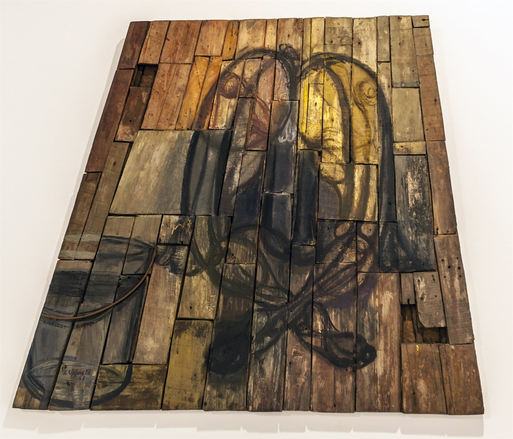
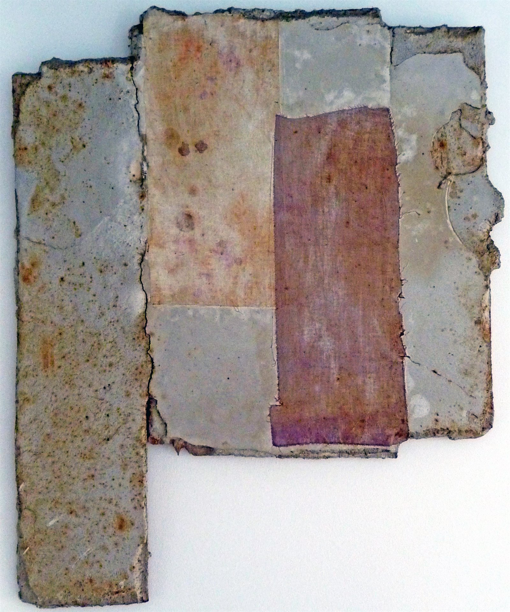
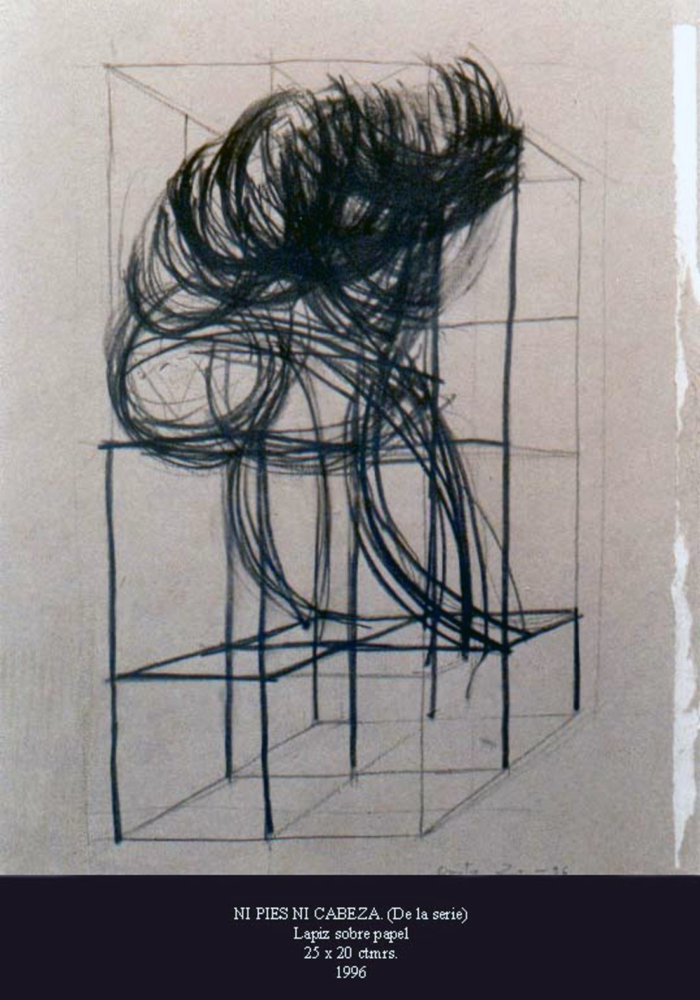
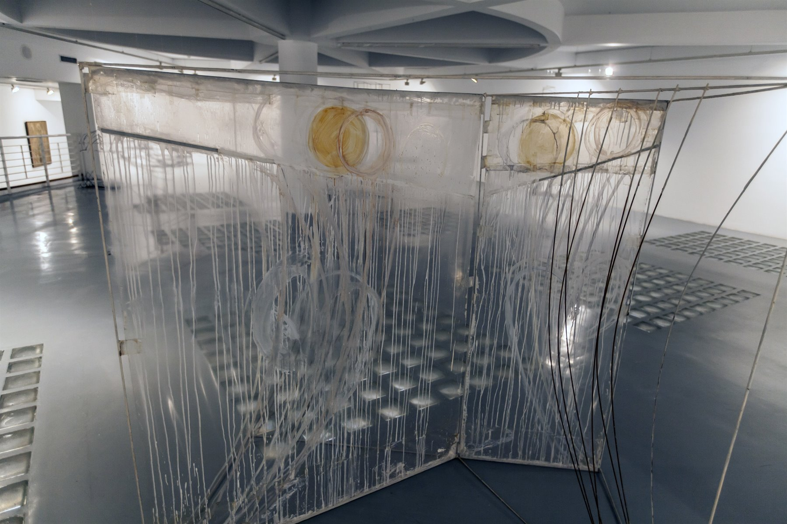
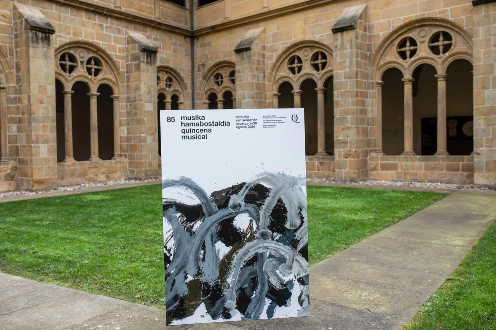
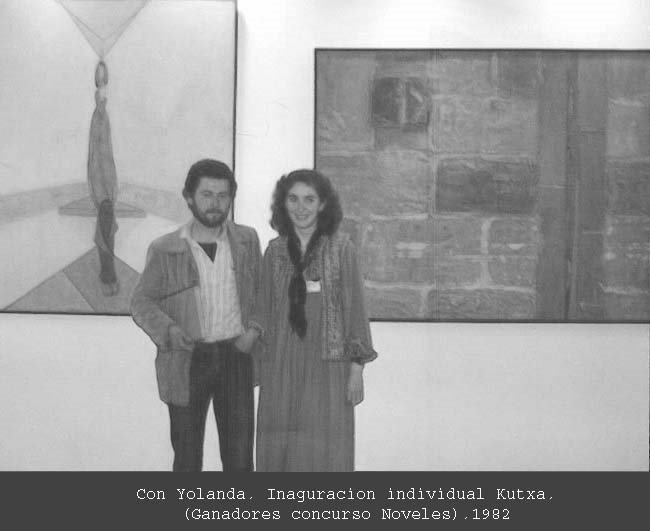
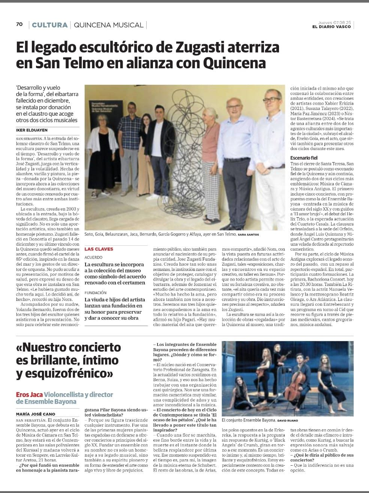
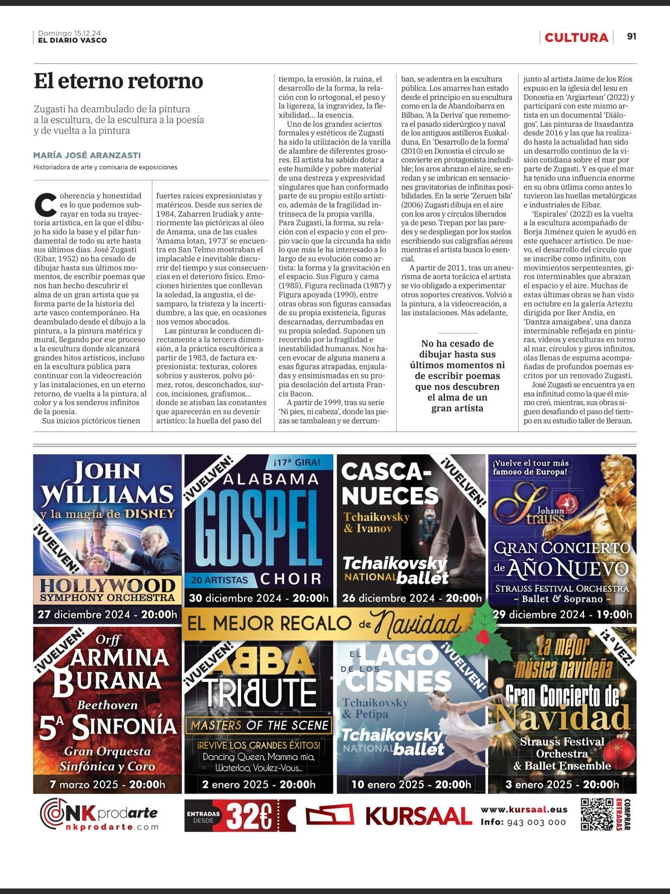

Dibujos
Papel · trazo figurativo
El punto de partida: la escena urbana, el paisaje costero y la figura resueltos con un trazo de raíz figurativa. Base de todo el recorrido posterior.

Durante medio siglo dio la vuelta al lienzo: en lugar de pintar sobre él, empezó a sacarle las formas con alambre, hasta dejar solo el gesto, suspendido en el aire.
Nacido en Eibar en 1952, en pleno corazón industrial de Gipuzkoa, Zugasti convirtió el oficio del metal en un lenguaje propio de la escultura contemporánea vasca.
En 1970 se trasladó a Madrid para formarse en la Escuela Superior de Bellas Artes de San Fernando. Aquellos primeros años los dedicó a la pintura: escenas urbanas de la capital y paisajes costeros —los acantilados de Lekeitio le acompañarían como motivo recurrente— resueltos con un trazo de raíz figurativa.
En 1980 regresó al País Vasco y se instaló en Donostia-San Sebastián, ciudad donde desarrollaría el resto de su carrera. La década siguiente marcó un giro decisivo: abandonó la estampa de estilo modiglianesco por una pintura matérica centrada en la figura humana y el paso del tiempo. De ahí pasó a interesarse por cómo la forma ocupa y se sostiene en el espacio, un camino que le llevó progresivamente a la abstracción —y, con ella, a su seña de identidad: extraer la línea del lienzo y dejarla en pie, sola, hecha de alambre.
Expuso individualmente desde 1981, primero en la Caja Laboral de Gernika y después en salas de Pamplona, Hondarribia, Errenteria, Donostia, Bilbao, Salamanca, Madrid y Colonia. Participó también en citas colectivas como ARCO Madrid (1992, 1997 y 1998) y las bienales de blanco y negro de comienzos de los 80. En los últimos años de su trayectoria retomó la figuración, pero leída ya desde la abstracción que la precedió: una figuración conceptual, no un regreso atrás.
Compaginó la escultura con la ilustración gráfica, colaborando con publicaciones como Cuadernos de Alzate. En 2024 firmó el cartel oficial de la Quincena Musical de San Sebastián, uno de los festivales más longevos de música clásica de Europa. Falleció el 14 de diciembre de 2024 en Donostia-San Sebastián, a los 72 años.
Fichas por categoría, a la espera de las imágenes de la familia. Cada bloque admite varias piezas cuando lleguen las fotografías.
El punto de partida: la escena urbana, el paisaje costero y la figura resueltos con un trazo de raíz figurativa. Base de todo el recorrido posterior.

El giro decisivo de su obra: la línea abandona el lienzo y se sostiene sola en el aire. La abstracción como método para pensar cómo la forma ocupa el espacio.

Su trabajo sobre la estampa y la edición, en paralelo a la escultura y la ilustración para publicaciones como Cuadernos de Alzate.

El núcleo de su lenguaje maduro: el gesto extraído del papel y rehecho en alambre y metal, entre la figuración conceptual y la abstracción.

Piezas instaladas en la calle: «A la deriva» en la ría de Bilbao (concurso Bilbao Ría 2000, 1997), «Txirrindularia» en Eibar y «Formen Dantza» en la plaza de Ego-Gain.

Auñamendi Entziklopedia

Selección inicial de recortes del archivo familiar. Pulsa cualquier tarjeta para ver el documento completo.
 Archivo familiar · 1986
Crítica de Edorta Kortadi
Recorte digitalizado del archivo de prensa histórico.
Archivo familiar · 1986
Crítica de Edorta Kortadi
Recorte digitalizado del archivo de prensa histórico.
 Diario YA · 1986
Mención en prensa nacional
Publicación sobre su trabajo durante su etapa de consolidación.
Diario YA · 1986
Mención en prensa nacional
Publicación sobre su trabajo durante su etapa de consolidación.
 GAC · 1986
Artículo sobre obra y proceso
Recorte histórico digitalizado del archivo familiar.
GAC · 1986
Artículo sobre obra y proceso
Recorte histórico digitalizado del archivo familiar.
 EGAM · 1987
Reseña crítica de exposición
Documento hemerográfico de finales de los años 80.
EGAM · 1987
Reseña crítica de exposición
Documento hemerográfico de finales de los años 80.
 El Día · 2005
Cobertura de trayectoria escultórica
Recorte del periodo de madurez de su obra en metal y alambre.
El Día · 2005
Cobertura de trayectoria escultórica
Recorte del periodo de madurez de su obra en metal y alambre.
 Diario Vasco · 2021
Artículo sobre «El Ciclista»
Noticia centrada en una de sus piezas de obra pública.
Diario Vasco · 2021
Artículo sobre «El Ciclista»
Noticia centrada en una de sus piezas de obra pública.

Diario Vasco · Archivo Desarrollo de la forma y Quincena Recorte relacionado con exposición y contexto musical. Prensa local · 2024
Presentación del cartel de la Quincena
Recorte del acto de presentación del cartel oficial.
Prensa local · 2024
Presentación del cartel de la Quincena
Recorte del acto de presentación del cartel oficial.

Archivo familiar · 2024 Homenajes y despedidas Selección de recortes tras su fallecimiento en Donostia. Auñamendi Entziklopedia Entrada biográfica Ficha enciclopédica de su vida y obra. Eibar.eus · 2024 Nota sobre su fallecimiento El Ayuntamiento de Eibar despide al escultor. Quincena Musical · 2024 Cartel de la 85ª edición Su último encargo público.El estudio de José en Donostia, con sus herramientas, bocetos y piezas en proceso. Un espacio que la Fundación conserva como parte del legado.
Visitas bajo cita previa.
Solicitar visita →
Para consultas sobre la obra, cesiones, exposiciones o archivo, contactar por los siguientes canales.